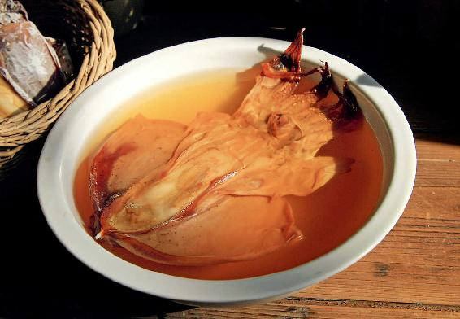
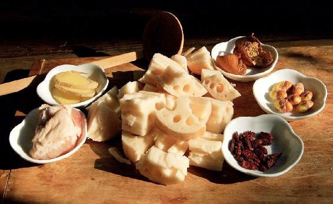
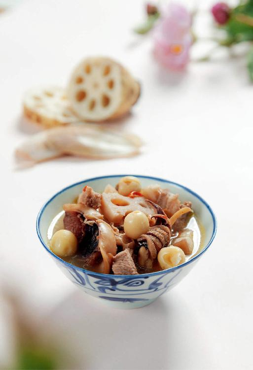

《周易》坤卦的卦辞“履霜，坚冰至”，对应的就是从霜降开始的秋末和整个冬季。
秋分之后，自然界以阴气为主，所以秋分之后的节气，古人观测到的天象，记录在坤卦中。
古人看到了什么星就知道霜降节气到了呢？
“驷见而陨霜”，在日出之前，看到天驷出现在天空，就是落霜的时节。
天驷其实是天上龙星的一部分。龙星是由七个星宿组成，其中位于龙星腹部的房宿，就是天驷。
天驷是由排成一列的四颗星组成，就像同驾一辆车的四匹马。成语“驷马难追”，就是指这个“驷”。
天驷的四颗星，都是属于天蝎座。在西方的星相学中，每年10月下旬到11月下旬出生的人，太阳星座属于天蝎座。这个起始日期，就是在霜降节气。
“履霜，坚冰至”，就是指从结霜开始到结坚冰这段时间。
什么时候结坚冰呢？就是大寒的第三候“水泽腹坚”。
从霜降开始到大寒节气，寒气主宰，我们要开始认真地避寒就温了。这几个月，如果寒气入体，即使当时不发病，也会给春天埋下隐患。
霜降的食方，也是可以延续到冬天的，一直到大寒节气，都适合经常吃。
霜降节气是秋天的最后一个节气了，在这段时间，要注意滋养肝血，我们可以喝一道双莲墨鱼汤。
另外，如果牙齿有黄垢、色素的堆积，比如说经常抽烟、喝茶的人，也可以用它来擦牙齿，让牙齿变白。
这道汤喝起来很清甜，很鲜。您也不要担心里面的一点点肥肉，因为墨鱼一定要用肥肉或者动物油，炖出来才不会发苦。如果您不喜欢猪肉，也可以用鸡肉代替，或者是往汤里加一小块黄油。
双莲墨鱼汤
原料：墨鱼干1〜2只，肥猪肉1小块，莲藕250克，莲子20粒，枸杞20粒，陈皮半个，带皮生姜3片。

做法：
1.用冷水泡发墨鱼干和莲子。莲子如果是当年新鲜的莲子干品，则不用提前泡发。墨鱼干如果是当年淡晒的，也不用泡发；如果是盐晒的，就要反复多泡几次去掉盐分。记住，墨鱼干要连骨一起炖煮。

2.把莲藕切成段，和其他原料一起入锅，加冷水，用大火烧开，再转小火，炖上40分钟到1小时就可以了。关火起锅前加入少许的盐。
允斌叮嘱：
1.墨鱼干可以用小只的，巴掌大小就可以，不需要很大只。
2.加肥肉是为了增加汤的油性，炖墨鱼要用荤油才好吃。如果您不喜欢猪肉，可以用其他动物油来代替。
3.如果您希望增加滋补的功效，用带心的白莲子、红莲子都可以。如果怕莲子心的苦味，也可以把心去掉。
4.如果是从药店买的那种切成丝的陈皮，需要10〜20克，因为切成丝的陈皮会混有一些杂品、伪品。
5.生姜不要去皮。
6.墨鱼炖软烂以后，肉和骨会自动分离。记住，墨鱼骨不要扔掉，把它晾干，可以做一个外用的药来使用。比如，您不小心把手指割破了，马上把墨鱼骨取出来，用刀刮一点骨粉撒在伤口上，可以止血。
霜降期间，双莲墨鱼汤可以每天喝，隔一两天喝一次也行，基本上喝半个月，您就会发现效果很明显。
这道汤有什么功效呢？主要就是养肝血、补心脾、滋阴润燥。
这个汤里面，莲子补气，对于脾虚引起的大便不成形有好处；而莲藕正相反，它是活血的，能很好地调理血虚引起的便秘。
把莲子和莲藕搭配起来，会使这道汤比较平和，全家老小都可以喝。
莲藕熟吃活血、生吃凉血，它能帮身体止住好血，排出恶血。比如，有的小孩子经常流鼻血，家长可以多给他吃生莲藕。而在生理期的女性，不要吃生莲藕，可以喝莲藕汤，汤煮的时间要久一点，再加一点生姜。
陈皮可以理气、化痰、健脾胃，用在这道汤里还能解油腻。而枸杞在这道汤里是滋补我们肝肾的。
双莲墨鱼汤，如果您喝了很舒服，觉得它很适合您的体质，那么，整个冬天都可以继续喝下去。
双莲墨鱼汤的主料是墨鱼干，墨鱼干我之前讲过，它是非常好的补血食材，也是女性的良药。
在秋冬季节，如果我们想要补心血，就用桂圆；如果要好好补肝血，就用墨鱼干；如果您两样都想补，在双莲墨鱼汤里面加一些桂圆就可以了。

读者评论：喝了双莲墨鱼汤就好像充了电一样
高山流水长：喝完双莲墨鱼汤真的很舒服。喝一碗热乎乎的双莲墨鱼汤，连主食都不用吃了。
wy桂树：喝了三天双莲墨鱼汤，几年来早晨刷牙出血的现象就没了，太神奇了，由衷地感谢陈老师！
玉竹：双莲墨鱼汤真好，喝完一觉睡到大天亮！
咩咩：我发现这段时间右手食指和中指有了小月牙，看到读者的经验分享后才知道，原来是喝了双莲墨鱼汤的效果，好开心呀。
艳阳高照：喝了双莲墨鱼汤，掉头发少了，食指也开始长月牙了，每天晚上到了十点也能很快入睡了。
静听花开：从秋分开始，每天喝双莲墨鱼汤，眼睛红、干涩的毛病没有了，腿爱抽筋、指甲爱折的现象也没了，整个人很舒服，精气神足。
艳阳：连续喝了几天双莲墨鱼汤后，大便成形了。谢谢老师，我会继续喝的！
冬日夏云：霜降开始煲双莲墨鱼汤，效果真的是太明显了。哺乳期天天熬夜，又不能吃药，喝了双莲墨鱼汤后，晚上睡得特别香，而且超级下奶，宝宝这两天也特别能吃。我和宝宝太有福气了，谢谢陈老师。
刘林林：双莲墨鱼汤实在是太好喝了，清淡美味，喝了它就好像充了电一样，立刻有精神头了。
紫气东来：我有便秘的毛病，一般是五六天大便一次。我的便秘属于寒秘，开始大便秘结，到最后都是稀便。自从喝了双莲墨鱼汤，现在两三天大便一次，并且都是“香蕉便”，再没有便稀，每次都利利索索。
宁静致远 ：自从喝了双莲墨鱼汤，更年期潮热的毛病就没有了。我现在每周坚持喝两次双莲墨鱼汤。
允斌解惑：双莲墨鱼汤四季都可以喝
刘小艳：请问煲双莲墨鱼汤是用炖锅好，还是用隔水的炖盅好？
允斌：都可以呀。
幸运草：冬天可以喝双莲墨鱼汤吗？
允斌：双莲墨鱼汤四季都可以喝。
红：墨鱼黑色的皮要剥掉吗？
允斌：要保留。
圈圈：不知道什么原因，双莲墨鱼汤炖了两次都发苦，希望老师解答一下。
允斌：两个可能的原因，1. 墨鱼干不好；2. 陈皮有问题。
大豌豆：双莲墨鱼汤中的莲子要带心，是不是针对没有便溏的人的？如果是便溏明显的人，是不是可以用去心莲子？
允斌：对。
玲子：双莲墨鱼汤里的莲子是带心，还是要去心？
允斌：根据自己体质来选，一般用带心莲子。
林氏穴位推拿：一天内能既喝双莲墨鱼汤又喝银耳汤吗？
允斌：可以的。